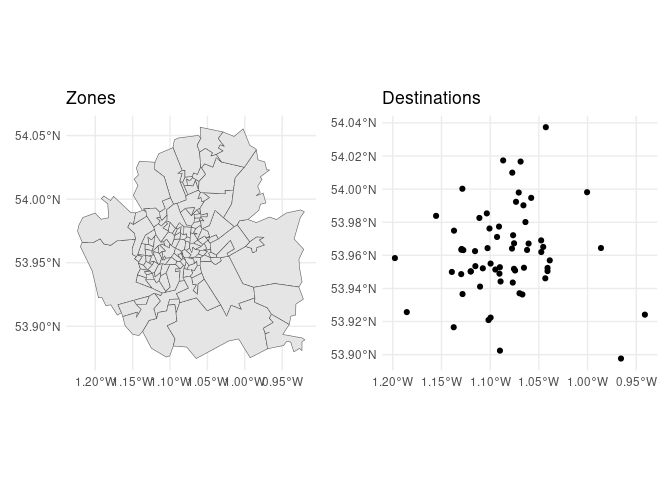
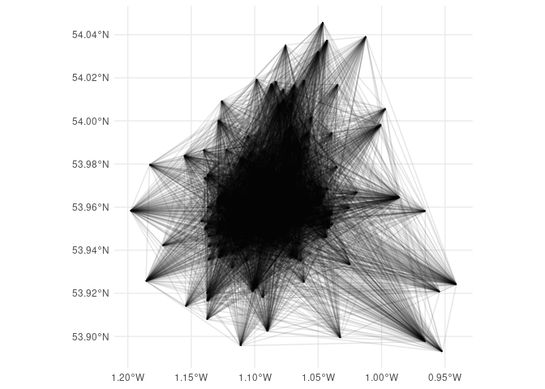
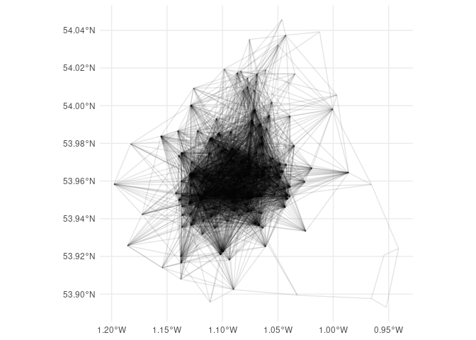
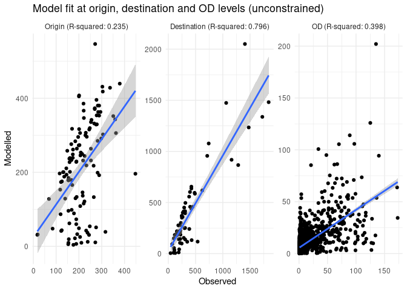
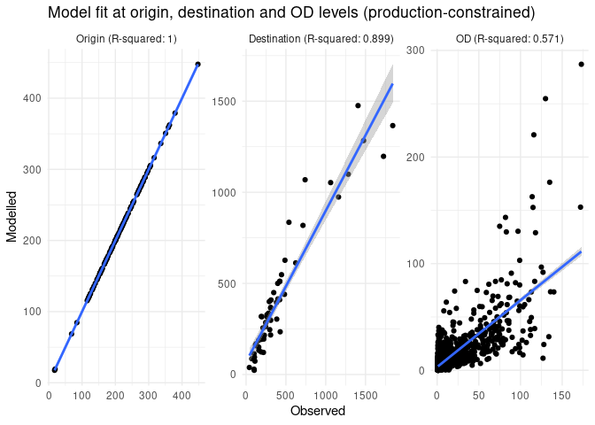
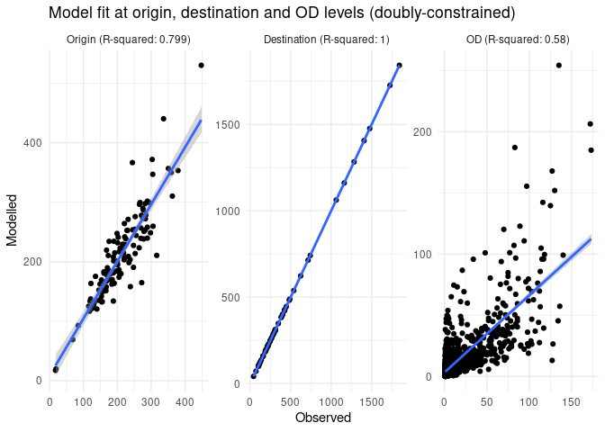
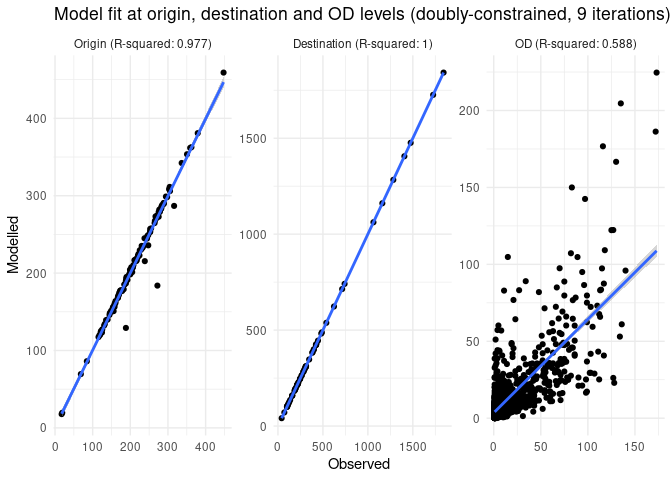

Generate origin-destination data for route network generation
Introduction
The code in this results demonstrates how to generate origin-destination (OD) data for a given set of zones and destinations. OD data is a key input into spatial interaction models (SIMs) for generating route networks. (See An introduction to spatial interaction models: from first principles introduction to SIMs for more information.) The code is fully reproducible, although requires a validation dataset that is not in the public domain to generate goodness-of-fit statistics shown in this reproducible document.
Install the package as follows (you can also clone the repo and run devtools::load_all()):
if (!require("devtools")) install.packages("devtools")
devtools::install_github("acteng/netgen")The package uses the {simodels} R package to pre-process the input datasets and generate the OD data used as the basis of the interaction prediction model. The input datasets are illustrated in the figure below (these are zones_york and destinations_york that are provided with the pacage):

Before we run any models let’s compare the total number of pupils in the zones dataset and the destinations dataset (they should be the same):
zone_overestimate_factor =
(sum(zones_york$f0_to_15) + sum(zones_york$m0_to_15)) /
sum(destinations_york$n_pupils)
zone_overestimate_factorAs one would expect, the total number of pupils in the zones dataset is a bit bigger than the total number of pupils in the destinations dataset: not all people aged 0 to 15 go to school, especially those under school age. To tackle this issue we’ll create a new variables called pupils_estimated in the zones dataset, which is the sum of the number of pupils in the zones dataset and the number of pupils in the destinations dataset.
zones_york = zones_york |>
dplyr::mutate(
pupils_estimated = (f0_to_15 + m0_to_15) / zone_overestimate_factor
)After the adjustment shown above, the totals in the origin and destination columns should be the same:
sum(zones_york$pupils_estimated)
sum(destinations_york$n_pupils)Preprocessing
Based on these inputs the si_to_od() function generates the OD data, as shown below (note: 2 versions are created, one with a maximum distance constraint for speed of processing, important when working with large datasets).
max_dist = 5000 # meters
od_from_si_full = simodels::si_to_od(zones_york, destinations_york)
od_from_si = simodels::si_to_od(zones_york, destinations_york, max_dist = max_dist)

The output OD dataset has column names taken from both the origin and destination datasets, with the following column names:
[1] "O" "D"
[3] "distance_euclidean" "origin_LSOA21NM"
[5] "origin_total" "origin_f0_to_15"
[7] "origin_f16_to_29" "origin_f30_to_44"
[9] "origin_f45_to_64" "origin_f65_and_over"
[11] "origin_m0_to_15" "origin_m16_to_29"
[13] "origin_m30_to_44" "origin_m45_to_64"
[15] "origin_m65_and_over" "origin_pupils_estimated"
[17] "destination_n_pupils" "destination_phase"
[19] "destination_type_of_establishment" "geometry" A basic model
An unconstrained model
Let’s run a simple model:
gravity_model = function(beta, d, m, n) {
m * n * exp(-beta * d / 1000)
}
# perform SIM
od_res = simodels::si_calculate(
od_from_si,
fun = gravity_model,
d = distance_euclidean,
m = origin_pupils_estimated,
n = destination_n_pupils,
# constraint_production = origin_all,
beta = 0.8
)We’ll make one adjustment to the output dataset, renaming the interaction column to trips, and setting the total number of trips to be the same as the total number of pupils in the destinations dataset:
interaction_overestimate_factor = sum(destinations_york$n_pupils) / sum(od_res$interaction)
od_res = od_res |>
dplyr::mutate(
interaction = interaction * interaction_overestimate_factor
)We can assess the model fit at three levels: the origin level (number of students departing from each zone), the destination level (the number arriving at each school in the input dataset) and the origin-destination level.

The R-squared value is 0.398.
Optimising the value of beta
The beta parameter in the gravity model is a key parameter that determines the strength of the distance decay effect.
We can optimise it with an objective function that minimises the difference between the observed and modelled trips:
objective_function = function(beta) {
od_res = simodels::si_calculate(
od_from_si,
fun = gravity_model,
d = distance_euclidean,
m = origin_pupils_estimated,
n = destination_n_pupils,
beta = beta
)
interaction_overestimate_factor = sum(destinations_york$n_pupils) / sum(od_res$interaction)
od_res = od_res |>
dplyr::mutate(
trips = interaction * interaction_overestimate_factor
)
sum((od_res$trips - od_res$frequency)^2, na.rm = TRUE)
}
# Try it with beta of 0.8:
objective_function(0.8)
# Optimise it:
beta_opt = optimise(objective_function, c(0.1, 1))
beta_new = beta_opt$minimum
beta_newLet’s try re-running the model with the new beta value:
res_optimised = simodels::si_calculate(
od_from_si,
fun = gravity_model,
d = distance_euclidean,
m = origin_pupils_estimated,
n = destination_n_pupils,
beta = beta_new
)
cor(res_optimised$frequency, res_optimised$interaction, use = "complete.obs")^2Production-constrained model
Let’s see if making the model production constrained can help:
res_constrained = simodels::si_calculate(
od_from_si,
fun = gravity_model,
d = distance_euclidean,
m = origin_pupils_estimated,
n = destination_n_pupils,
constraint_production = origin_pupils_estimated,
beta = beta_new
)
The R-squared value is 0.571.
Doubly-constrained model
Let’s implement a doubly-constrained model, starting with the outputs of the production-constrained model:
res_doubly_constrained = res_constrained |>
group_by(D) |>
mutate(
observed_group = first(destination_n_pupils),
modelled_group = sum(interaction),
modelled_overestimate_factor = modelled_group / observed_group,
interaction = interaction / modelled_overestimate_factor
)
# summary(res_doubly_constrained)
sum(res_doubly_constrained$interaction) == sum(res_constrained$interaction) 
The R-squared value is 0.58.
The model is now ‘doubly constrained’ in a basic sense: the first iteration constrains the totals for each origin to the observed totals, and the second iteration constrains the totals for each destination to the observed totals.
Let’s constrain by the origin totals again:
res_doubly_constrained_2 = res_doubly_constrained |>
group_by(O) |>
mutate(
observed_group = first(origin_pupils_estimated),
modelled_group = sum(interaction),
modelled_overestimate_factor = modelled_group / observed_group,
interaction = interaction / modelled_overestimate_factor
)And then by the destination totals again:
res_doubly_constrained_3 = res_doubly_constrained_2 |>
group_by(D) |>
mutate(
observed_group = first(destination_n_pupils),
modelled_group = sum(interaction),
modelled_overestimate_factor = modelled_group / observed_group,
interaction = interaction / modelled_overestimate_factor
)After one more full iteration of fitting to the observed totals, the R-squared value is 0.594.
Additional iterations do not increase model fit against the observed OD data in this case (working not shown).

Model output
The model outputs OD data, with any of the columns listed below:
names(res_doubly_constrained_9) [1] "O" "D"
[3] "distance_euclidean" "origin_LSOA21NM"
[5] "origin_total" "origin_f0_to_15"
[7] "origin_f16_to_29" "origin_f30_to_44"
[9] "origin_f45_to_64" "origin_f65_and_over"
[11] "origin_m0_to_15" "origin_m16_to_29"
[13] "origin_m30_to_44" "origin_m45_to_64"
[15] "origin_m65_and_over" "origin_pupils_estimated"
[17] "destination_n_pupils" "destination_phase"
[19] "destination_type_of_establishment" "frequency"
[21] "geometry" "interaction"
[23] "trips" "observed_group"
[25] "modelled_group" "modelled_overestimate_factor" For the purposes of this project, we’ll only use three of them:
res_output = res_doubly_constrained_9 |>
select(O, D, trips_modelled = interaction)
summary(res_output) O D trips_modelled geometry
Length:4338 Min. :121266 Min. : 0.01305 LINESTRING :4338
Class :character 1st Qu.:121711 1st Qu.: 0.72370 epsg:4326 : 0
Mode :character Median :142845 Median : 1.89543 +proj=long...: 0
Mean :137748 Mean : 5.90848
3rd Qu.:144709 3rd Qu.: 5.61269
Max. :150205 Max. :224.64802 The results are saved as .csv and .geojson files ready for the next step:
sf::write_sf(res_output, "res_output.geojson", delete_dsn = TRUE)
res_output |>
sf::st_drop_geometry() |>
write_csv("res_output.csv")Summary and next steps
The reproducible code in this vignette shows how to develop fast reproducible spatial interaction models (SIMs) using the simodels package. A simple model, using only one estimated parameter (beta) can explain more than half of the variation in flows, as measured by the R-squared value. This is not bad considering that York has a river so many of the Euclidean distances are not representative of the actual travel distances.
There are many ways the model could be refined:
- Using different models for different types of schools (e.g. primary and secondary schools).
- Using route distance rather than Euclidean distance to estimate flows and explore impact on model fit.
- Adding more parameters to the model, e.g. exponents on the origin and destination populations (see Wilson’s work for more on that).
- Using regression to estimate the impact of other variables on flows
- Using a more complex model, such as the radiation model.
- Scalability: it would be worth exploring how well the approach scales for all LSOAs and schools in the UK, for example, for example uses the
max_distparameter in theodpackage (work in progress to integrate this into thesimodelspackage), see https://github.com/ITSLeeds/od/pull/48 for details.
For the purposes of this repo, however, we have demonstrated how to rapidly generate plausible OD data that can feed into network generation models.